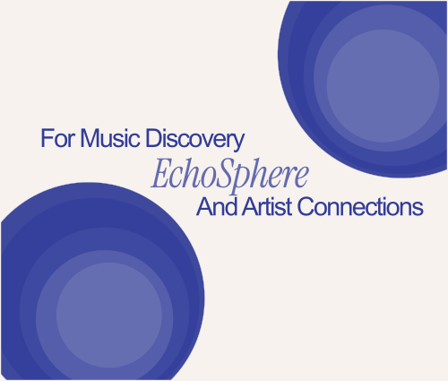

Spring 2026
Live web app: embedded games, playful child login, mobile and dark mode, pixel pet assets—embedded with engineering on five sprints.
Tools:

Fall 2025
A music discovery platform that connects artists and listeners through innovative audio experiences.
Tools:

Spring 2026
Heavenly Laser Lyre—invisible strings, MIDI via Arduino and Python, Genshin-inspired build. CAD, soldering, and air-dry clay wings.
Tools:

Study abroad
Overlaying the Wall’s history with where I felt at ease or drained—patterns in the East, trams, memory, and the shape of the city.
Tools:

Spring 2026
Make each day feel new again. An app that reframes daily interactions through a gentle, reflective lens. Scroll through the slidedeck to see the full case study.
Tools: